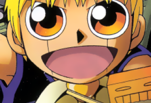
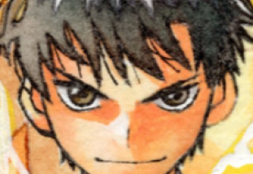
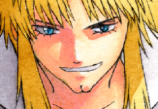
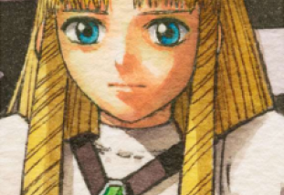
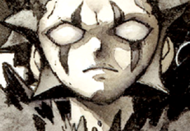
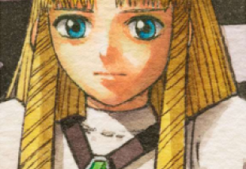
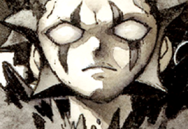
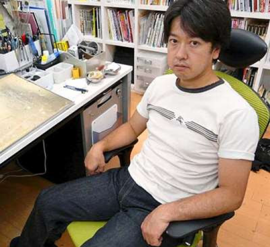

Personagens



 



Autor

Makoto Raiku é um artista de mangá cujos trabalhos apareceram com destaque na publicação Weekly Shōnen Sunday da Shogakukan. Começando como assistente de Kazuhiro Fujita em seu mangá Ushio & Tora, ele começou a criar vários one-shots para a antologia de mangá shōnen, como Bird Man, Hero Ba-Ban e Genmai Blade. Em 1999, ele criou a série Newtown Heroes, que foi publicado no Shōnen Sunday Super, uma publicação sazonal apresentando novos artistas de mangá e one-shots do livro principal de domingo.